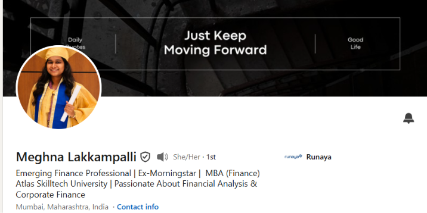
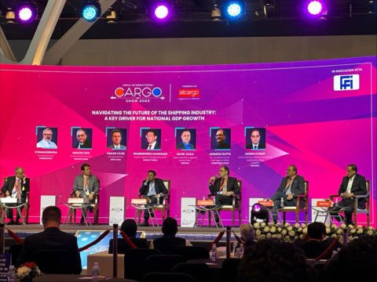
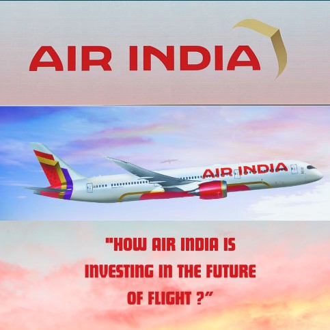
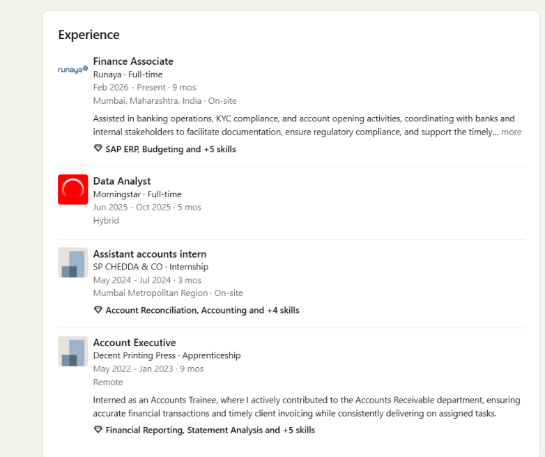
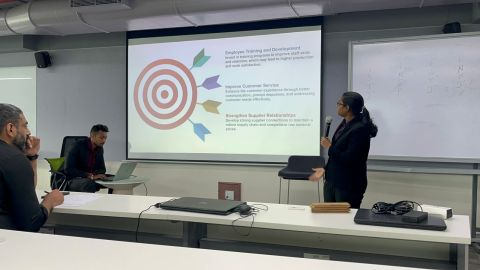

Finance Associate
Runaya · Full-time · Mumbai · On-siteSupporting banking operations, KYC compliance and account-opening activities, coordinating with banks and internal stakeholders to keep documentation and regulatory processes moving smoothly.
● FINANCE · ANALYSIS · CORPORATE FINANCE
Emerging finance professional with experience across accounting, banking operations, data analysis and corporate finance — with a growing focus on financial analysis and business decision-making.
Dedicated MBA candidate at Atlas SkillTech University, specialising in Finance and building on a foundation in Accounting & Commerce.
Experience across banking operations, KYC compliance, account opening, data analysis and accounting support — combining structured financial processes with analytical thinking.
Interested in Financial Analysis, Corporate Finance, BFSI and business problem-solving, with a mindset centered on learning, communication and continuous improvement.
CAREER TIMELINE
From accounting fundamentals to banking operations and data analysis, each role adds another layer to a finance-first perspective.
Supporting banking operations, KYC compliance and account-opening activities, coordinating with banks and internal stakeholders to keep documentation and regulatory processes moving smoothly.
Worked in a data-focused environment, strengthening analytical thinking and the connection between financial information and actionable business insights.
Supported account reconciliation and day-to-day accounting activities while building practical experience with financial records and reporting workflows.
Contributed to Accounts Receivable, maintaining accurate financial transactions and supporting timely client invoicing.
FINANCE IN PRACTICE
Selected examples of financial and business thinking shared through LinkedIn, coursework and collaborative projects.

Exploring data-driven decision-making and analytics in insurance operations.
Read article ↗
Professional exposure where operations, finance and global trade intersect.
View post ↗
Curiosity around capital expenditure and strategic financial decisions.
View post ↗
A structured look at financial performance through the DuPont framework.
View analysis ↗
Collaborative business problem-solving through an Atlas project.
View project ↗LEARNING STACK
Professional learning across finance systems, consulting and innovation — alongside an MBA in Finance.
G-TEC JAIN Keerti Education
General Ledgers · Accounts Payable · +2 skillsMetvy
Issued Jun 2021Indian Institute of Technology, Roorkee · NPTEL
Issued Aug 2021ATLAS SKILLTECH UNIVERSITY
Building advanced capability in finance, analysis, business problem-solving and corporate decision-making.
Motivated by challenges, curious about finance, and always looking for the next opportunity to learn, analyse and grow.
— MEGHNA LAKKAMPALLI06 / LET'S CONNECT
Open to conversations around Finance, BFSI, Financial Analysis, Corporate Finance and meaningful professional opportunities.
Connect on LinkedIn ↗